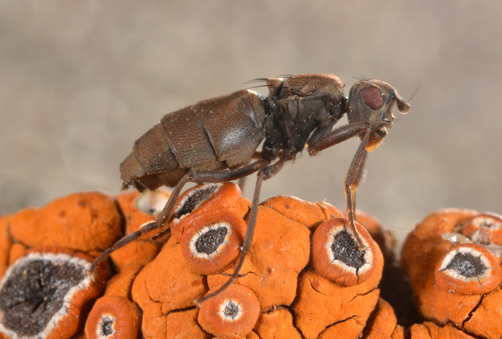
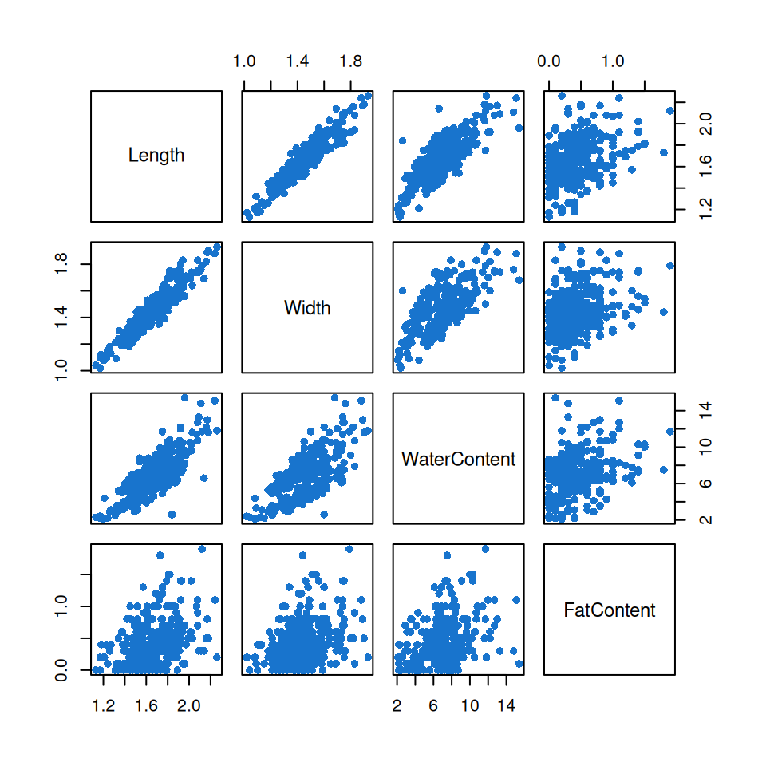
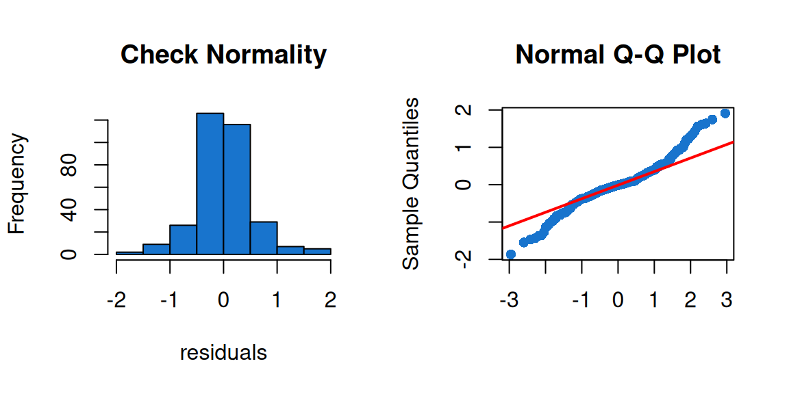
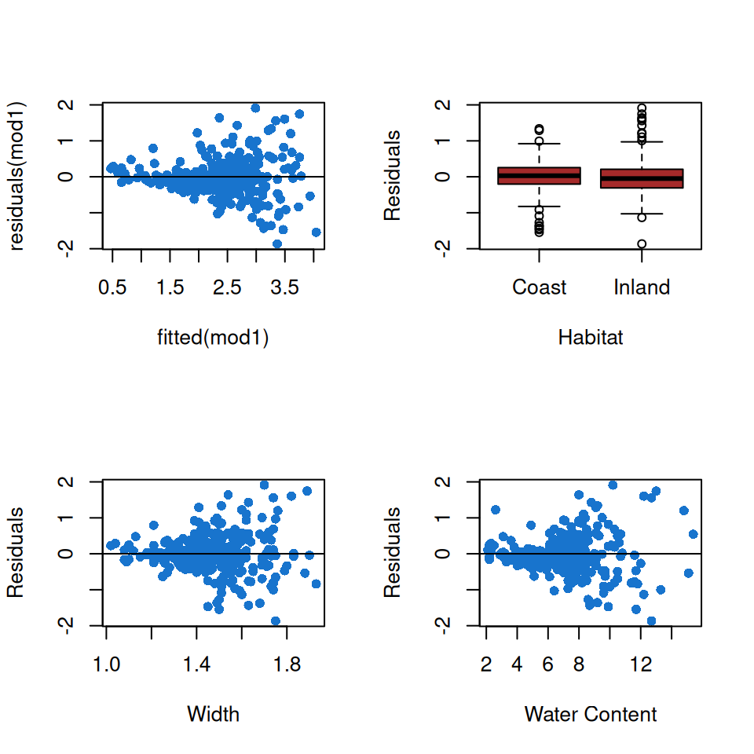
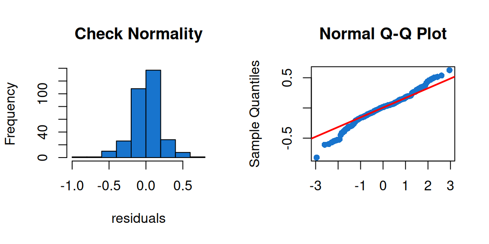
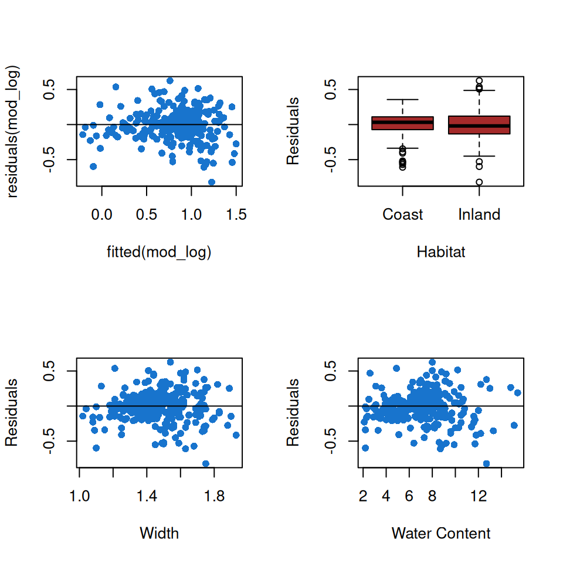

#Configuration de la session et chargement des packages R
rm(list=ls()) # Nettoie l'espace de travail
library(ggplot2) # Package pour les graphiquesDétermination des variables dans les variations du poids des individus chez Anatalanta aptera par la méthode ANCOVA
INTRODUCTION GENERALE
Présentation des données et des objectifs de l’analyse
Pour cet exercice, nous utiliserons les données d’une étude réalisée par Philippe Vernon - Université de Rennes 1 (1994) et qui concerne la mouche Anatalanta aptera, une mouche aptère vivant dans les colonies d’oiseaux marins des îles subantarctiques. Au début des années 90, P. Vernon a collecté de nombreux individus sur l’archipel de Crozet. Il a ainsi échantillonné sur le littoral et à l’intérieur des terres (i.e. paysage de relief). L’objectif principal de cette étude est de déterminer les variables expliquant le poids sec d’Anatalanta aptera. Le poids sec, désignant le poids de l’animal après qu’il ait été séché dans une étuve, représente la matière organique et inorganique totale contenues chez un individu. Cette métrique serait plus précise que la mesure du poids : le poids sec est une mesure fiable de la croissance et est un bon indicateur du contenu énergétique d’un individu.

Après l’échantillonnage, P. Vernon a identifié et mesuré en laboratoire les traits d’histoire de vie suivants :
- Sex = le sexe d’un individu donné, variable qualitative
- Habitat = l’habitat d’un individu donné (‘Coast’ or ‘Inland’), variable qualitative
- Length = la longueur d’un individu donné, variable quantitative
- Width = la largeur d’un individu donné, variable quantitative
- WaterContent = le poids en eau d’un individu donné, variable quantitative
- FatContent = le poids lipidiques d’un individu donné, variable quantitative
- DryWeight = le poids sec d’un individu donné, variable quantitative
La variable réponse est le poids sec et les autres variables sont supposées être des variables explicatives. La question sous-jacente à cette étude est : quelles variables quantitatives (i.e. covariables) et qualitatives (i.e. facteurs) déterminent le poids sec chez Anatalanta aptera ?
Les données figurent dans le fichier FlyWeight.txt.
Méthode utilisée
La reproductibilité scientifique, comme décrit dans l’article, est essentielle lors de l’analyse des données. Une méthode d’analyse est présenté ici, l’ANCOVA
Modèle mathématique
L’ANCOVA ou “Analysis of Covariance-Variance” est une méthode statistique visant à expliquer une variable quantitative \(Y\), par plusieurs variables explicatives quantitatives et qualitatives. Il s’agit donc de l’association d’une ANOVA et d’un modèle de régression linéaire. Ce modèle linéaire multivarié peut ou non prendre en compte l’interaction entre les variables quantitatives et qualitatives. Dans sa représentation la plus complexe (avec interaction), Il s’écrit sous la forme de Équation 1, avec \(\mu\) la moyenne générale (ordonnée à l’origine), \(\alpha_{i}\) l’effet du ième facteur (des variables qualitatives), \(\beta\) est l’effet de la covariable (la pente de la droite de régression), \(\gamma_{i}\) est le coefficient associé à l’interaction entre le facteur \(i\) et la covariable et \(\epsilon_{ij}\) est l’erreur (i.e. les résidus). Ce modèle est fondé sur l’homoscédasticité (homogénéité de la variance), l’indépendance des observations et l’hypothèse que les résidus \(\epsilon\) suivent une loi normale centrée (\(\epsilon \sim \mathcal{N}(0,\sigma^2)\)),
\[ Y_{ij} = \mu + \alpha_{i}+ \beta.X_{ij}+\gamma_{j}.X_{ij}+ \epsilon_{ij} \tag{1}\]
Application
Avec le jeu de donnée expliqué ci-dessus, on cherche à expliquer le poids sec d’Anatalanta aptera (\(Dry\:weight\)) à l’aide des variables observées sur le terrain. Si l’on applique l’ANCOVA aux données étudiées ici, après simplification et ajustement du modèle on obtient l’Équation 2 :
\[ Dry\:weight = \mu + Habitat\:_i + Width.X_{ij} + Water\:Content.X_{ij} + [Habitat:Width].X_{ij} + [Habitat:WaterContent].X_{ij} + \epsilon_{ij} \tag{2}\]
avec \(Habitat=\{Coast,Inland\}\), \([Habitat:Width]\) l’effet d’interaction entre l’habitat et la largeur de l’individu, et \([Habitat:WaterContent]\) l’effet d’interaction entre l’habitat et la quantité d’eau de l’individu.
ANALYSE DES DONNÉES
Configuration de la session
Importation du jeu de données
# Importation des données
dataFly <- read.table("FlyWeight.txt", dec=".", header = TRUE)
dataFly$Sex<-as.factor(dataFly$Sex)
dataFly$Habitat<-as.factor(dataFly$Habitat)
str(dataFly)'data.frame': 320 obs. of 8 variables:
$ FlyNumber : int 1 2 3 4 5 6 7 8 9 10 ...
$ Sex : Factor w/ 2 levels "Female","Male": 2 2 2 2 2 2 2 2 2 2 ...
$ Habitat : Factor w/ 2 levels "Coast","Inland": 1 1 1 1 1 1 1 1 1 1 ...
$ Length : num 1.4 1.55 1.52 1.44 1.77 1.69 1.79 1.65 1.58 1.62 ...
$ Width : num 1.24 1.39 1.26 1.18 1.46 1.41 1.46 1.41 1.32 1.4 ...
$ WaterContent: num 5.9 7.1 6.8 5.3 8.2 7.6 8.2 7.2 6.5 8.8 ...
$ FatContent : num 0.3 0.2 0 0.2 0.1 0 0 0.3 0.1 0.2 ...
$ DryWeight : num 2.2 3 2.2 2 3.1 2.6 2.8 3.1 2.2 2.6 ...# Vérification de la présence de données manquantes
colSums(is.na(dataFly)) FlyNumber Sex Habitat Length Width WaterContent
0 0 0 0 0 0
FatContent DryWeight
0 0 #Aucune donnée manquanteToutes les variables ont la bonne catégorie associée et n’ont pas de valeurs manquantes.
Exploration des données
Vérification de l’échantillonnage
# Création d'un tableau croisé
tableau_echantillon <- table(Sexe = dataFly$Sex, Habitat = dataFly$Habitat)
# Génération du tableau formaté
knitr::kable(tableau_echantillon)| Coast | Inland | |
|---|---|---|
| Female | 80 | 80 |
| Male | 80 | 80 |
Comme l’indique le Table 1, nous avons un échantillonnage équilibré.
Vérification de la colinéarité des variables explicatives
# Représentation des graphiques pour chaque paire de covariables continues
plot(dataFly[,4:7],pch=16,col='dodgerblue3')
Comme observé sur la Figure 1, nous retirons la variable longueur car celle-ci est fortement corrélée aux variables largeur et teneur en eau.
Construction du modèle
# Formulation du modèle
mod1<-lm(DryWeight~ Habitat
+ Width
+ WaterContent
+ Habitat:Width
+ Habitat:WaterContent
,data=dataFly)
ok <- summary(mod1)
# Vérification de la significativité
knitr::kable(drop1(mod1,test="F"))
# Coefficients du modèle
summary(mod1)
Call:
lm(formula = DryWeight ~ Habitat + Width + WaterContent + Habitat:Width +
Habitat:WaterContent, data = dataFly)
Residuals:
Min 1Q Median 3Q Max
-1.86592 -0.25639 -0.01119 0.23329 1.91099
Coefficients:
Estimate Std. Error t value Pr(>|t|)
(Intercept) 0.05228 0.66459 0.079 0.937354
HabitatInland -2.43270 0.78331 -3.106 0.002072 **
Width 0.21761 0.64964 0.335 0.737865
WaterContent 0.31332 0.04925 6.362 7.02e-10 ***
HabitatInland:Width 2.34365 0.73427 3.192 0.001557 **
HabitatInland:WaterContent -0.21378 0.05437 -3.932 0.000104 ***
---
Signif. codes: 0 '***' 0.001 '**' 0.01 '*' 0.05 '.' 0.1 ' ' 1
Residual standard error: 0.5239 on 314 degrees of freedom
Multiple R-squared: 0.6129, Adjusted R-squared: 0.6067
F-statistic: 99.42 on 5 and 314 DF, p-value: < 2.2e-16| Df | Sum of Sq | RSS | AIC | F value | Pr(>F) | |
|---|---|---|---|---|---|---|
| NA | NA | 86.18718 | -407.7759 | NA | NA | |
| Habitat:Width | 1 | 2.796303 | 88.98348 | -399.5585 | 10.18758 | 0.0015570 |
| Habitat:WaterContent | 1 | 4.244102 | 90.43128 | -394.3938 | 15.46225 | 0.0001036 |
Le Table 2 présente le modèle candidat qui contient toutes les interactions des variables explicatives X qui ont un effet sur le poids sec d’Anatalanta aptera, la variable à expliquer Y. Ainsi, aucune autre variable n’est à retirer de ce modèle.
En ce qui concerne les coefficients, l’intercept prend en compte l’habitat côtier qui correspond donc à l’habitat de référence. Théoriquement, les individus de l’habitat “Inland” ont une base de poids sec significativement plus faible (Beta ~ -2.43 ; p-value = 0.002) que ceux de l’habitat de référence. Dans l’habitat de référence, la largeur n’a pas d’effet significatif (p-value > 0.05) sur le poids sec. Contrairement à la teneur en eau dans l’habitat de référence (côtier) qui augmente très significativement (p-value < 0.05) le poids sec (+0.31 g pour chaque unité de teneur en eau ajoutée).
La pente réelle de la largeur pour l’habitat inland est calculée selon l’équation suivante: \[ \text{Pente}_{\text{Inland}} = 0.217 + 2.343 = 2.56 \tag{3}\]
Pour les interactions, bien que la largeur n’ai pas d’effet significatif pour l’habitat de référence, elle a un fort effet positif (p-value < 0.05) dans l’habitat Inland, d’après l’Équation 3.
Pour finir, Le modèle explique 61.3 % (R²=0.613) de la variance du poids sec. C’est un score plutôt bon pour des données biologiques. Le modèle est significativement robuste quant à la prédiction du poids sec avec une erreur alpha inférieur à 0.05.
Validation du modèle
Normalité des résidus
par(mfrow=c(1,2))
# Histograme
hist(mod1$residuals,col='dodgerblue3',xlab="residuals",main="Check Normality")
# Quantile-Quantile plot
qqnorm(mod1$residuals,pch=16,col='dodgerblue3',xlab='')
qqline(mod1$residuals,col='red',lwd=2)
Comme le montre la Figure 2, les résidus dévient un peu de la loi normale au niveau des extrémités mais cela ne pose pas de problèmes.
Homogénéité de la variance
par(mfrow=c(2,2))
# résidus vs prédictions
plot(residuals(mod1)~fitted(mod1)
, col='dodgerblue3'
, pch=16)
abline(h = 0)
# résidus contre le facteur Habitat
boxplot(residuals(mod1)~ dataFly$Habitat,
varwidth = TRUE,
col="brown",
ylab = "Residuals",
xlab = "Habitat",
main = "")
# résidus contre la Largeur
plot(residuals(mod1)~ dataFly$Width,
pch=16,
col="dodgerblue3",
ylab = "Residuals",
xlab = "Width",
main = "")
abline(h = 0)
# résidus contre la Teneur en eau
plot(residuals(mod1)~ dataFly$WaterContent,
pch=16,
col="dodgerblue3",
ylab = "Residuals",
xlab = "Water Content",
main = "")
abline(h = 0)
Comme l’illustre la Figure 3, l’homogénéité de la variance n’est pas entièrement respectée, il faudrait faire une transformation logarithmique des données pour homogénéiser plus.
Transformation logarithmique des données
# Nouveau modèle avec la variable Y transformée en log
mod_log<-lm(log(DryWeight)~ Habitat
+ Width
+ WaterContent
+ Habitat:Width
+ Habitat:WaterContent
,data=dataFly)
# Afficher le résumé
summary(mod_log)
Call:
lm(formula = log(DryWeight) ~ Habitat + Width + WaterContent +
Habitat:Width + Habitat:WaterContent, data = dataFly)
Residuals:
Min 1Q Median 3Q Max
-0.82085 -0.10290 0.01249 0.11388 0.62537
Coefficients:
Estimate Std. Error t value Pr(>|t|)
(Intercept) -0.11227 0.26059 -0.431 0.666905
HabitatInland -1.75760 0.30715 -5.722 2.45e-08 ***
Width 0.16730 0.25473 0.657 0.511800
WaterContent 0.11252 0.01931 5.827 1.40e-08 ***
HabitatInland:Width 1.38749 0.28792 4.819 2.25e-06 ***
HabitatInland:WaterContent -0.08297 0.02132 -3.892 0.000121 ***
---
Signif. codes: 0 '***' 0.001 '**' 0.01 '*' 0.05 '.' 0.1 ' ' 1
Residual standard error: 0.2054 on 314 degrees of freedom
Multiple R-squared: 0.703, Adjusted R-squared: 0.6982
F-statistic: 148.6 on 5 and 314 DF, p-value: < 2.2e-16Nous remarquons que les mêmes variables sont significatives lorsque nous transformons la variable y “poids sec” en logarithme.
par(mfrow=c(1,2))
# Histograme
hist(mod_log$residuals,col='dodgerblue3',xlab="residuals",main="Check Normality")
# Quantile-Quantile plot
qqnorm(mod_log$residuals,pch=16,col='dodgerblue3',xlab='')
qqline(mod_log$residuals,col='red',lwd=2)
Nous pouvons voir sur la Figure 4 que les points sont répartis de façon un peu plus homogène autour de la droite rouge, ce qui signifie que les résidus suivent plus une distribution normale lorsque la variable y est transformée en logarithme.
par(mfrow=c(2,2))
# résidus vs prédictions
plot(residuals(mod_log)~fitted(mod_log)
, col='dodgerblue3'
, pch=16)
abline(h = 0)
# résidus contre le facteur Habitat
boxplot(residuals(mod_log)~ dataFly$Habitat,
varwidth = TRUE,
col="brown",
ylab = "Residuals",
xlab = "Habitat",
main = "")
# résidus contre la Largeur
plot(residuals(mod_log)~ dataFly$Width,
pch=16,
col="dodgerblue3",
ylab = "Residuals",
xlab = "Width",
main = "")
abline(h = 0)
# résidus contre la Teneur en eau
plot(residuals(mod_log)~ dataFly$WaterContent,
pch=16,
col="dodgerblue3",
ylab = "Residuals",
xlab = "Water Content",
main = "")
abline(h = 0)
La Figure 5 illustre bien que la transformation logarithmique a parfaitement stabilisé la variance des résidus, ce qui résout les éventuels problèmes d’hétéroscédasticité du modèle initial.
CONCLUSION
Grâce à l’ANCOVA, nous avons réussi à proposer un modèle permettant d’expliquer selon quelles variables et interactions le poids sec d’un individu varie. Nous avons conservé uniquement les variables expliquant le mieux le poids sec et nous avons enlevé les variables apportant en outre de la redondance d’information.
Le modèle a été validé, d’une part par l’homogénéité des résidus, et d’autre part également par la normalité des résidus.
Par la suite, il serait intéréssant de comprendre, d’un point de vue biologique, physiologique ou génétique peut-être, comment s’effectue la variation du poids chez les individus. Sur le plan génétique, on pourrait se demander dans quelle mesure la variabilité observée est d’origine héréditaire. Sur le plan physiologique, on pourrait chercher à comprendre comment les individus répartissent leurs ressources entre croissance, reproduction et stockage, et comment cela se traduit par des différences de poids.